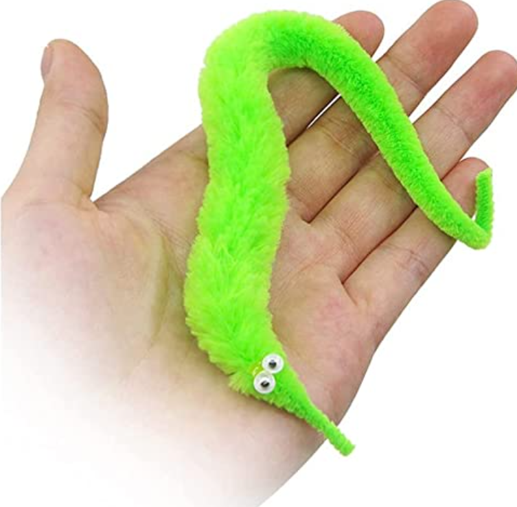

One time, I dreamt I was in a small canoe off the coast of some cliffs coming out of the water. In the canoe with me was my brother Jake, his friend Ian, and none other than Yoshi, the dinosaur from Mario. The scene of Yoshi in the boat with us was completely normal, and I did not even begin to question the fact that I was hanging out with a video game character. This is not the only time I have had dreams like this. Anyways, we were out here in the ocean fishing, but not just doing any normal fishing. Ian had brought us here to show us how to catch a certain type of fish. I don’t know what you would call it, but it was a green worm like fish that looked like a popular cat toy. The image below is exactly what it looked like. You couldn’t catch these fish with a hook and line, but you had to swim underwater and catch them by hand. First you had to go under water, and squeeze a liquid out of them by pinching their body from the bottom and pulling upward like a gogurt. Once you got the liquid out, you’d eat the fish raw underwater. Ian was the main one doing this, jake was following him, while Yoshi and I were pretty hesitant. I remember swimming under and removing the liquid but not being sure if I should actually do it. I think Yoshi was the most scared out of all of us and I don’t remember actually ever eating the fish. This dream happened sometime in 2021
